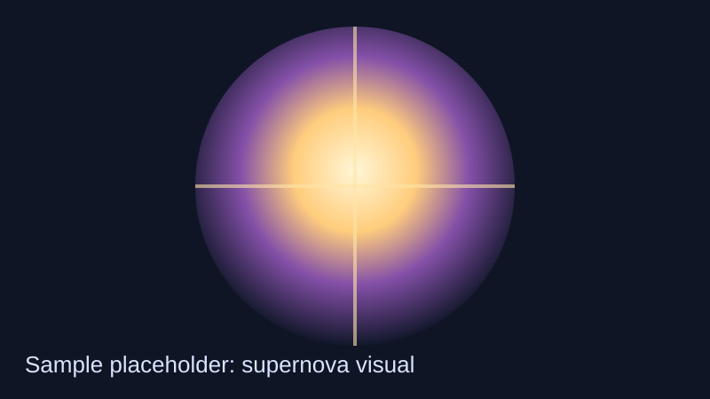

Discovery detail
Sample entry (placeholder)First Light: Candidate Supernova
A rapidly brightening transient signal, consistent with early-stage supernova behaviour in this sample dataset.

Why it matters
Early transient detections improve constraints on progenitor models and can sharpen calibration of distance-scale methods.
What you are seeing
This page demonstrates a reusable storytelling format for time-domain events: metadata, media, context, key facts, and source references.
The narrative text here is intentionally non-claiming and educational. It is scaffold content for front-end implementation.
Observation notes
Sample cadence points indicate rapid brightness increase over early observations. In a production site, this section would include vetted photometry plots and uncertainty discussion.
Follow-up strategy placeholder: trigger spectroscopy where feasible, then refine classification using multi-band light curves.